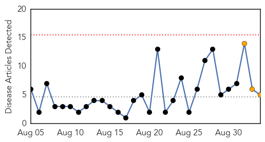
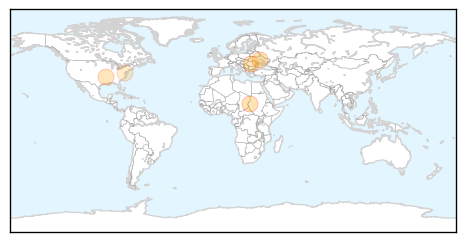
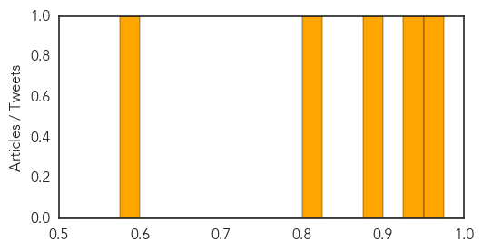

Cholera
30-Day Web Trend
1 alerts, 0 warnings
30-Day Twitter Trend
2 alerts, 0 warnings
Article Locations

Article Confidences

Top Articles:
Top Tweets:
- 0.651
- RT: so much Haiti/cholera coverage gets this wrong. Peacekeepers in Haiti since 2004. https://t.co/iSWM0YcqO7
Measles
30-Day Web Trend
0 alerts, 3 warnings

30-Day Twitter Trend
0 alerts, 0 warnings

Article Locations
Article Confidences
Top Articles:
Top Tweets:
-
No tweets found for Sep 03, 2015